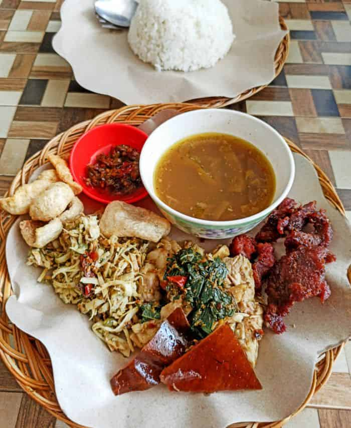

Nasi Be Guling

Nasi Be Guling is a traditional Balinese dish that features rice served
with roasted pork and a variety of side dishes. It is commonly found in
Balinese restaurants and is a must-try for anyone visiting Bali.
This dish is often enjoyed with a side of crispy pork skin and a spicy
sauce.
Nasi Be Guling is a popular choice for both locals and tourists in Bali.
Ingredients
- Roasted pork
- Steamed rice
- Spicy sambal
- Vegetables (such as cucumber and bean sprouts)
Steps
- Prepare the roasted pork and slice it into thin pieces.
- Steam the rice until fluffy and cooked through.
- Serve the rice on a plate, topped with the sliced roasted pork.
- Add a generous spoonful of spicy sambal on the side.
- Garnish with fresh vegetables like cucumber and bean sprouts.
Back to Recipes Home page